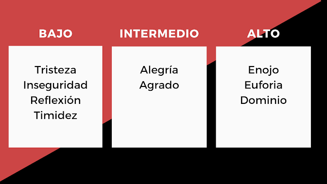

Que bueno que estás de vuelta por aquí y si es tu primera vez visitando mi site, te invito a que
vayas a la pestaña de artículos, a leer las otras publicaciones.
Hoy te comento sobre varios términos básicos que debe conocer todo locutor, en especial, quienes se
dedican o quieren dedicarse al área de locución comercial.
El tono, es la cualidad de los sonidos, dependiente de su
frecuencia, que permite ordenarlos de graves a agudos.
Ejemplos de graves (Profundos):
- Voz de un varón adulto
- Sonido de un trombón
Ejemplos de agudos (Chillones):
- Canto de los pájaros
- Silbidos
También es la inflexión de la voz y modo particular de decir algo, según la intención o el
estado de ánimo de quien habla. “¡A mi no me hables así, cámbiame el tonito!”.
Si aún no te queda muy claro, sigue leyendo...podrás asociarlo de manera distinta al relacionarlo
con otros conceptos que te defino más adelante.
Cuando hablamos de volumen, hacemos referencia a la intensidad
de la voz o sonido. Si, misma comparación que en tu radio o tv.
Aquí algunas intenciones que puedes proyectar con distintos volúmenes de voz.

¿Cuántas veces has escuchado a alguien decir: “Me encanta tu tono de voz o el tono de voz de Fulano”?
Cuando a lo que realmente quieren referirse es al timbre. Digo, a menos que verdaderamente se refiera a lo grave o agudo que pueda hablar la persona en cuestión.
Entonces…el timbre, es la cualidad de tu voz que hace posible que esta sea reconocida o diferenciada de otras. Es lo que al igual
que tu huella digital, te hace único, a pesar de que puedan encontrarse timbres parecidos.
Esta característica de la voz, es la que determina que puedas, por ejemplo, imitar la voz de tu jefe o algún cantante.
Así que ya puedes dejar de decir "me gusta tu tono de voz", cuando lo que realmente te gusta, es el timbre.
Ejemplos:
- Las notas luctuosas se leen a un ritmo lento.
- Los trabalenguas se leen a un ritmo más acelerado.
La mejor forma de entender a qué se refieren cuando te hablan de intención es asociarlo a “emoción”.
Hagamos un ejercicio. Lee la siguiente frase tratando de impregnar las emociones que te indico al inicio.
- Triste: Cada vez que llego a casa, ahí está. Esperando a que entre y le salude.
- Alegre: Cada vez que llego a casa, ahí está. Esperando a que entre y le salude.
- Enojado: Cada vez que llego a casa, ahí está. Esperando a que entre y le salude.
Exacto, en cada una tuviste una intención o emoción diferente. Lo que pudiste lograr jugando con el tono, velocidad y hasta el volumen,
poniendo en práctica los cambios de volumen que te indiqué en el cuadro más arriba.
Si sientes que sonaste igual en todas, trata de hacer los cambios de volumen de manera consciente, luego juega con el ritmo, hasta que consigas
que cada una de las frases te evoque una emoción distinta, a pesar de que estás diciendo lo mismo.
Variar con fines armónicos las cualidades del sonido en el habla o en el canto. Pasar de una tonalidad a otra.
Los productores te pedirán modular para probar micrófono, por ejemplo.
Y finalmente, para mi, el término más importante, donde conjugarás todo.
La entonación va de la mano con el tono y es el grado de elevación
de la voz para marcar intenciones o sentimientos. Es lo que hace que el texto cobre vida y sentido.
Algunos tips sobre entonación:
- Bajar tono al final de las afirmaciones.
- Subir el tono al final de las preguntas.
- Se cambia el tono de las palabras que se interesa resaltar.

Saber jugar con todos estos factores, es lo que hará que logres una buena locución, que transmita exactamente lo que se busca con el audio que te toque grabar. Por que a fin de cuentas, allí está la magia, en que sin tener ninguna imagen de apoyo, quien te escucha pueda sentir a través de tu voz.